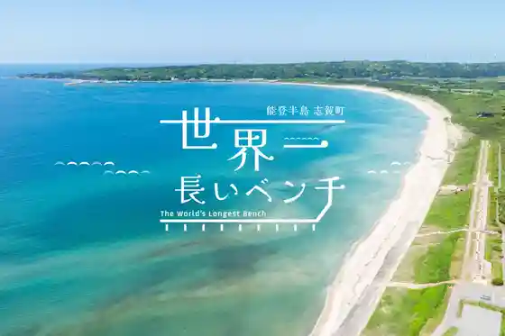
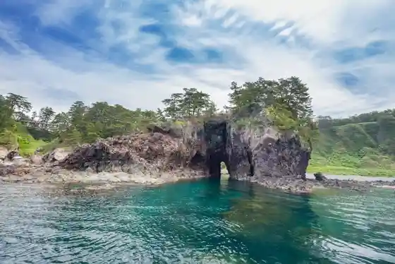
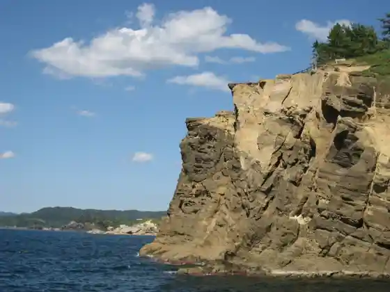
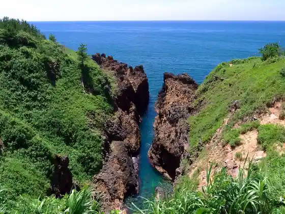

Sekaiichi Nagai Benchi
Shika, Ishikawa · 0767-42-0355 · Official / source link

Gan Mon
Shika, Ishikawa · 0767-42-0355 · Official / source link

Yase no Dangai
Shika, Ishikawa · 0767-32-1111 · Official / source link

Roadside Station Togi Umi Kaido
Shika, Ishikawa · 0767-42-0975 · Official / source link
Noto Kongo
Shika, Ishikawa · 0767-32-1111 · Official / source link

Roadside Station Koro Kaki no Sato Shika
Shika, Ishikawa · 0767-32-4831 · Official / source link
Noto Resort Eria Masuho Ura
Shika, Ishikawa · 0767-42-2125 · Official / source link
Masuho Ura Coast
Shika, Ishikawa · 0767-32-1111 · Official / source link
Kigu Iwa
Shika, Ishikawa · 0767-32-1111 · Official / source link
Akua Park Shi On
Shika, Ishikawa · 0767-32-8555 · Official / source link
Fukura Minato
Shika, Ishikawa · 0767-32-1111 · Official / source link
Yoshitsune no Fune Kakushi
Shika, Ishikawa · 0767-32-1111 · Official / source link
Kyu Fukura Lighthouse
Shika, Ishikawa · 0767-32-1111 · Official / source link
Heike
Shika, Ishikawa · 0767-32-1404 · Official / source link
Noto Kongo Yuransen
Shika, Ishikawa · 0767-48-1233 · Official / source link
Oshima Campground
Shika, Ishikawa · 090-4329-3134 · Official / source link
Penshon & Kafe Kuruzu
Shika, Ishikawa · 0767-32-3896 · Official / source link
Taka no Su Iwa
Shika, Ishikawa · 0767-32-1111 · Official / source link
Taka Tsume Yama
Shika, Ishikawa · 0767-32-1111 · Official / source link
Ganpeki no Haha no Hi
Shika, Ishikawa · 0767-32-1111 · Official / source link
Noto Resort in Misawa
Shika, Ishikawa · 0767-32-5566 · Official / source link
Arisu Kan Shika
Shika, Ishikawa · 0767-32-4321 · Official / source link
Hengyo Tera
Shika, Ishikawa · 0767-42-0300 · Official / source link
Matsumotoseicho Kahi
Shika, Ishikawa · 0767-32-1111 · Official / source link
Matsuo Shrine
Shika, Ishikawa · 0767-32-1111 · Official / source link
Goban Shima
Shika, Ishikawa · 0767-32-1111 · Official / source link
Koshimaki Jizo
Shika, Ishikawa · 0767-32-1111 · Official / source link
Tsubono Norihisa Yamada Aki Kahi
Shika, Ishikawa · 0767-32-1740 · Official / source link
Rai Nyuji no Mizubasho
Shika, Ishikawa · Official / source link
Noto Genshiryoku Center
Shika, Ishikawa · 0767-32-3511 · Official / source link
Ishitsumi Rokkaku Jizo to
Shika, Ishikawa · 0767-32-1111 · Official / source link
Kano Sakujiro Bungaku Hi
Shika, Ishikawa · 0767-32-1111 · Official / source link
Saikai Suisan
Shika, Ishikawa · 0767-45-1057 · Official / source link
Shika Town Hall
Shika, Ishikawa · 0767-32-1111 · Official / source link